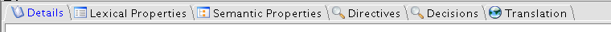

Contextual Panels
In the bottom right side of the application additional tabbed panels show
detailed information on the term selected in the Terms panel

Contextual Panels allow local language switching, i.e. visualization of matching details
information in one of the other Dalos Languages, for the selected term